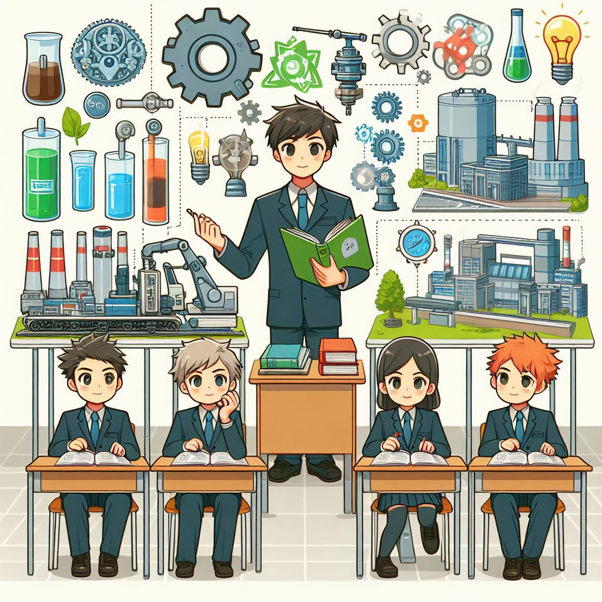
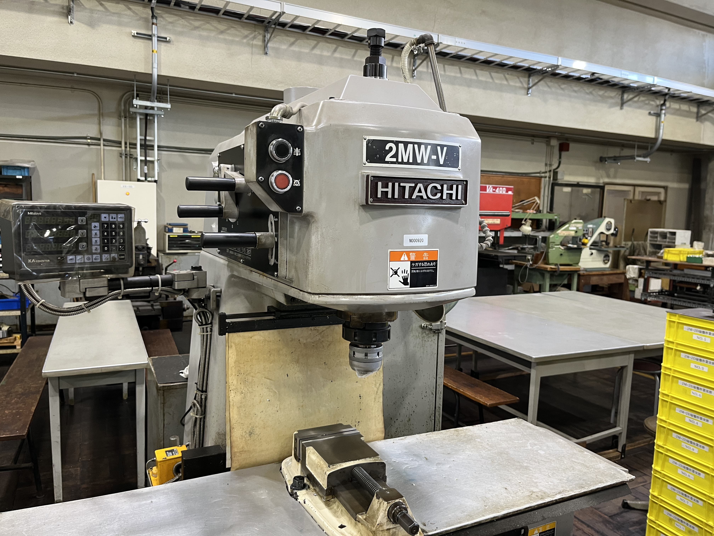

エネルギー機械コース（通称Mコース）では、以下の技術を中心に教育課程を構成しています。
これらを教育課程の特色とし、人のより良い暮らしと環境との共生を実現する技術者の育成を目指します。
 機械設計系、エネルギー系および計測制御系からなる機械工学とエネルギー工学関連の知識と技術について、工学的な基礎知識から産業への応用までを視野に入れて体系的・効率的に修得できる講義科目を配置します。
そして、講義科目で学んだ知識と技術について理解を深化・定着させるとともに、それを活用した実践的な設計、製作、解析および評価を他者と協働して取り組む経験と能力を養うために実験実習科目を配置します。理系科目が好き・得意な人はぜひ本校へ！そして、機械や自動車が好きな人はエネルギー機械コースへ！
さらに、課題の解決プロセスとその成果を表現する能力を身につけることを目的とした卒業研究を配置します。